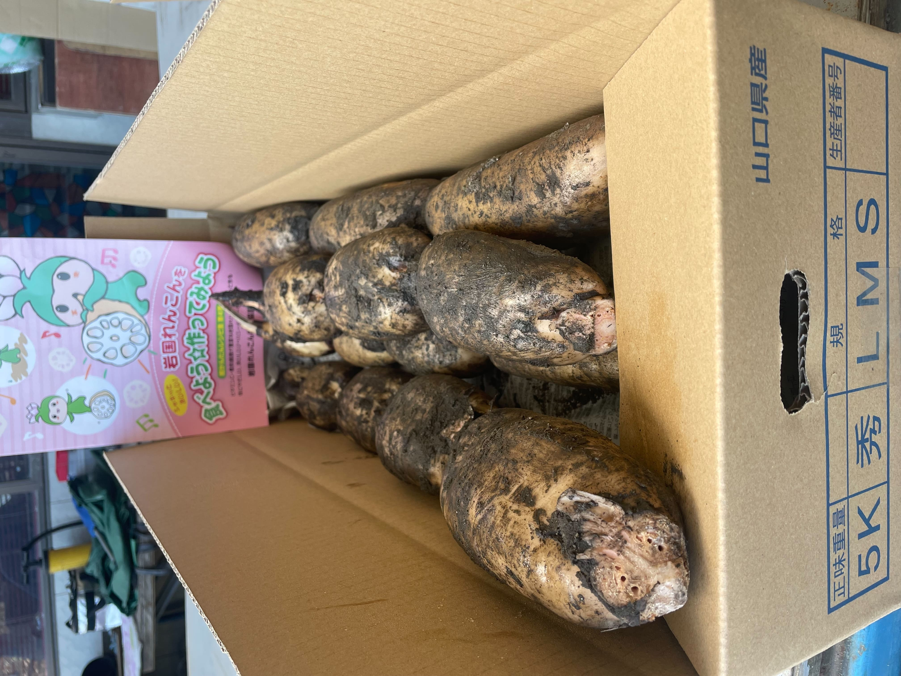
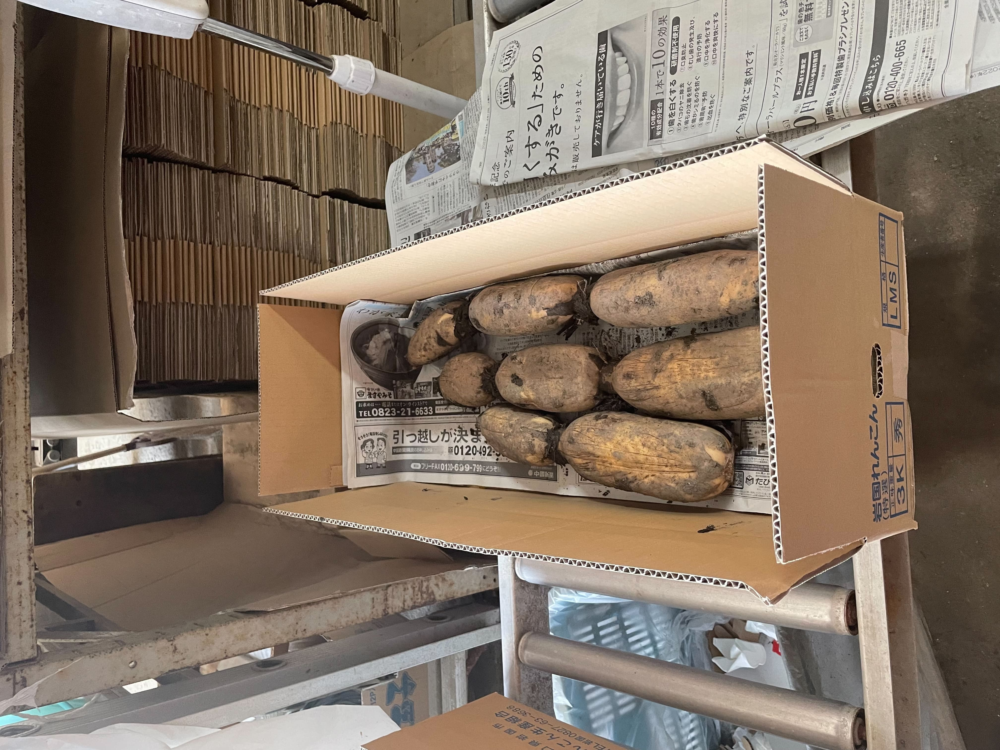

品質と伝統の融合を大切にしています。私たちは、岩国の美しい自然環境で育まれるれんこんを丹精込めて栽培し、伝統的な製法で加工しています。豊かな土壌と清らかな水がもたらす恵みを最大限に活かし、新鮮で風味豊かなれんこんをお届けしています。
岩国れんこん由美屋のこだわりは、地域の特産品であるれんこんを愛情を込めて育てることにあります。厳選された原料と伝統の技術を結集し、最高の品質を追求しています。私たちは、お客様に安心して食べていただける製品を提供するために、品質管理に徹底的に取り組んでいます。
地域の伝統を守りながら、新しい価値を創造し続けています。私たちは、れんこんの可能性を広げるために、常に研究と開発に取り組んでいます。おいしさと健康を両立させる製品を提供し、お客様の豊かな食生活をサポートしています。
岩国れんこん由美屋は、地域の美味しいれんこんを世界に発信するため、最近では積極的にSNSを活用しています。私たちは、TikTokやYouTubeなどのプラットフォームを通じて、れんこんの魅力や製品情報を発信し、お客様とのコミュニケーションを深めています。 SNSを通じて、岩国れんこん由美屋のストーリーや製品の魅力をお伝えするだけでなく、お客様との交流を大切にしています。お客様の声やフィードバックを受け止め、より良い製品やサービスを提供するために努めています。 岩国れんこん由美屋は、SNSを通じて地域の魅力を広く発信し、新しいお客様との出会いを楽しんでいます。私たちは、SNSを通じて皆さまとのつながりを大切にし、岩国れんこんの美味しさと健康への貢献をさらに広めていきます。
掘りたて
岩国れんこん由美屋の掘りたては、新鮮なれんこんの香りと美味しさを存分にお楽しみいただけます。地元の自然豊かな畑で丹精込めて育てられたれんこんを、旬のうちにお届けします。地元の新鮮さと手間暇かけた品質管理で、食卓に安心と満足をお届けします
産地直送
みなさまに愛されいる「岩国れんこん」を多くの方に召し上がっていただきたいとの思いで、私たちはここ岩国市で40年以上「岩国れんこん」を栽培してまいりました。 生産者だからできる、 掘りたて、産地直送！
安心安全自然栽培
亀やウシガエル・ザリガニ・昆虫などの生息する安心安全な環境、主に野菜や果物などを肥料に栽培されています。 由美屋の「岩国れんこん」は、人の手で行う完全自然栽培。 安心してお召し上がりください。
岩国れんこんの出荷時期は8月10日以後の予定になります。 れんこんの育成状況によっては多少前後しますのでご了承下さい。 また、白花岩国れんこんは奥手の品種になりますので10月以後の出荷になります。 決済フォームは出荷の10日前までにはメールにてお知らせします。 入金確認後に随時出荷させて頂きますのでよろしくお願い致します。 芽付れんこんに関しましては、希望本数、大きさ等色々と有ると思いますので要相談でお願いします。 出来るだけ要望に応えていきたいと思います。
岩国れんこん
土付き
2Kg 3,750円/1箱
3Kg 4,750円/1箱
4Kg 6,750円/1箱
岩国れんこん
洗い
2Kg 3,980円/1箱
3Kg 4,980円/1箱
4Kg 6,980円/1箱
白花岩国れんこん
土付き
2Kg 5,000円/1箱
3Kg 6,000円/1箱
4Kg 7,000円/1箱
芽付れんこん
芽付き
1本あたり、1,000円から1,500円プラス送料
A,白花れんこんは、おくてのれんこんで、いわゆる昔からある、岩国れんこんです。 品種改良が進んで、色々な品種のれんこんができてきたので今は、白花れんこんを作る農家も減ってきてます。 白花れんこんは、柔らかく、味も良い反面、病気に弱く収穫量が上がらない、育成が難しい品種なので、由美屋だからこそ食べれるれんこんです！
A,岩国れんこんは、低カロリーでありながら、食物繊維、ビタミン、ミネラルが豊富です。特に食物繊維やビタミンC、カリウムが多く含まれています。
A,岩国れんこんは冷暗所で保存するのが適しています。冷蔵庫の野菜室や涼しい場所で保存し、湿気や日光を避けることが重要です。
A,岩国れんこんはさまざまな調理方法で楽しむことができます。生のままサラダや和え物にしたり、煮物や炒め物に加えても美味しく食べることができます。
A,岩国れんこんは、春から秋にかけての成長期に栽培されます。成長期間は約4ヶ月から6ヶ月であり、収穫時期は夏から秋にかけてです。
A,岩国れんこんには、消化促進や便秘解消、血糖値の安定化などの健康効果があります。また、食物繊維やビタミンC、カリウムなどの栄養素が豊富に含まれており、健康維持や美容効果にも役立ちます。